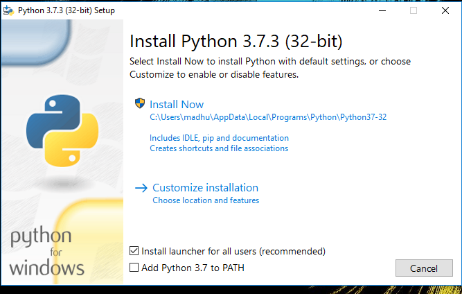
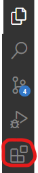
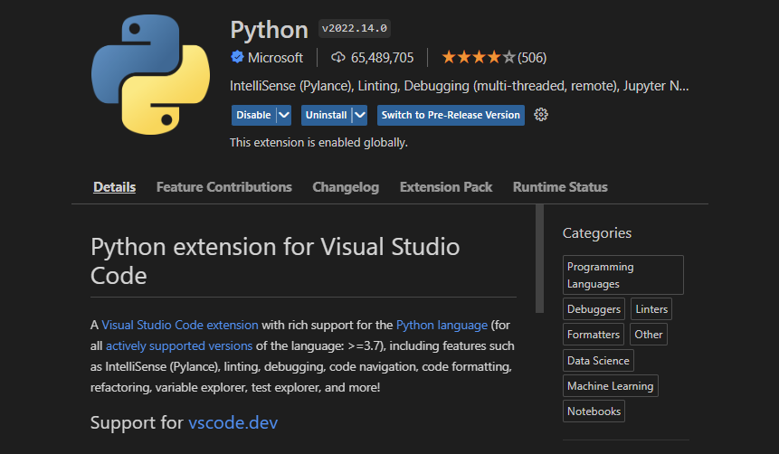

What is Python used for?
Python is used in tons of different industries including data analytics, AI and even website design. It is
also used quite extensively as a scripting language to preform repetitive tasks. It is also used a lot
in Universities to teach students about basic programing because of its simple setup
and ease to read syntax.

Set up a Python Enviroment in VS Code
We will be going over how install and set up python enviroment on your computer.
This tutorial should will be focused on a windows machine but the steps are
very similar if you are installing on a Mac. (NOTE - Mac Os comes with Python 2.7 pre-intalled, but we
will be installing and using python 3)
Step 0 - Checking Python Version
Before we start it is smart to see if you already have
python installed on your system. To check if you already
have it installed open a command promt on your machine.
Windows Shortcut - Windows Key + R then type "cmd" then Enter
Mac Shortcut - Cmd + Space
Type this command and then enter.
python --version
This will return with either the lastest version of python
that you have installed or will return not found.
C:\Users\Henri>python --version
Python 3.10.1
For this tutorial you will want atleast version 3.9. If you already
have this version or newer installed you are all good and can
start progrmming! If you dont have a new version of Python
or no version of python installed continue to Step 1.
Step 1 - Downloading Python
To get started installing python go to their
Offical Download Page
and download the latest version. The installer wizard will pop up and prompt
you to click the installation style you'd like.

Make sure you click add python to PATH. This makes
sure that python can be recongized anywhere in the system.
After that click Install Now
Congrats! Python is now installed.
Step 2 - Downloading Visual Studio Code
Next we have to install Visual Studio Code (VS Code for short).
First go to the Offical Download Page
and install the correct version for you computer. Follow the
promts on the installation wizard.
Once installed open up VS Code and click this button on the left
hand side.

This is the extensions menu. Here you can download many different extensiosn that
will help you build faster and cleaner looking code. Search python in
the text bar and install the first one by Microsoft.

After you have the extension you are all set up and ready to start coding!
Step 3 - Making a Basic Program